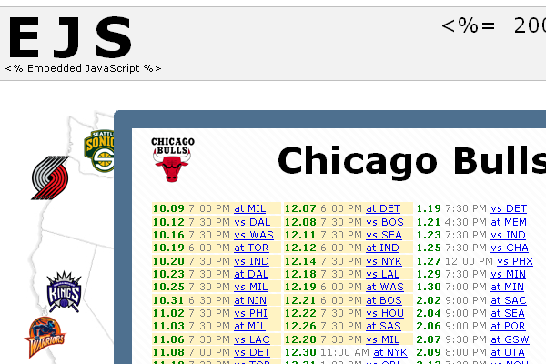

This screencast will show you how to create simple, readable layout code using the Embedded JavaScript (EJS) library.
Here’s what we’ll cover. We’ll use an NBA Schedule demo to show off the EJS AJAX functionality, review the template code used to display the games, and go over the advantages of the EJS method over the traditional method of displaying AJAX data.
To demonstrate this technique, we built this demo, which pulls the schedules of NBA teams from Google Calendar web services and renders the data returned using EJS templates. With the Google Calendar API, we make a request to the selected team’s calendar feed URL, which returns the season’s game data.
When you click an NBA team’s logo, a JavaScript function is called. Here, we fire off a request to Google Calendar for the team’s games, passing a callback function which will be invoked when the data returns. The callback has the job of putting together HTML using the data and putting it on the page.
Traditionally, you’d create a callback function to piece together HTML using string concatenation and then insert it into your page. This code is messy and complicated and you’d have a hard time visualizing the layout by looking at it.
var callback = function(data) {
var columns = split_into_columns(data.feed.getEntries(), 4)
var html = "<img src='http://www.nba.com/media/"+_loadedTeam+
"_50px_full.gif' alt="+teams[_loadedTeam].name+" />";
html += "<h6>"+teams[_loadedTeam].name+"</h6>";
html += "<div id='events_container'>";
for (var c = 0; c < columns.length; c++) {
html += "<div>";
for(var r=0; r < columns[c].length; r ++ ){
var entry = columns[c][r];
var start_date = entry.getTimes()[0].getStartTime().getDate();
html += "<p class='"+
(start_date > new Date() ? 'future' : '')+"'>";
html += "<label>"+
start_date.toShortDateString()+"</label>";
html += "<span>"+
start_date.toShortTimeString()+"</span>";
html += "<a href='"+entry.getHtmlLink().getHref()+
"'>"+entry.getTitle().getText().substring(4)+"</a>";
html += "</p>";
}
html += "</div>";
}
html += "</div>";
$('calendar_content').innerHTML = html;
}
EJS simplifies the display of AJAX data.
Let’s comment out the old code and do this the EJS way.
var callback = new EJS({url: 'templates/calendar.ejs'}).update('calendar_content');
One line of code creates a callback function that accepts the data returned by the asynchronous request, loads a template called calendar.ejs located in the templates directory, renders the template with the given data, and then updates the element on the page with the id ‘calendar_content’. This function is then passed to getEventsFeed as its callback.
In a second, we’ll walk through the template line by line. Just to refresh our memory, this template lays out the games from the Google Calendar request in a four column list like this.
<% var columns = split_into_columns(feed.getEntries(), 4) %>
<%= img_tag('http://www.nba.com/media/'+_loadedTeam+'_50px_full.gif',
teams[_loadedTeam].name) %>
<h6><%= teams[_loadedTeam].name %></h6>
<div id='events_container'>
<% for (var c = 0; c < columns.length; c++) { %>
<div>
<% for(var r=0; r < columns[c].length; r ++ ){ %>
<% var entry = columns[c][r];
var start_date =
entry.getTimes()[0].getStartTime().getDate(); %>
<p class="<%= start_date > new Date() ? 'future' : '' %>">
<label><%= start_date.toShortDateString() %></label>
<span><%= start_date.toShortTimeString() %></span>
<%= link_to_entry(entry) %>
</p>
<% } %>
</div>
<% } %>
</div>
We’ll first put the events in a 2D array indexed by row and column for easy access in our loops. Code between these angle percent magic tags is JavaScript that runs.
Then we’ll load the image for the particular team that was clicked. This line uses the image tag helper built into EJS, which is a shortcut for creating an image tag. It accepts a source and an alternate text parameter.
Now here we’ll create a header for the team’s name. Code between these angle percent equal sign tags returns HTML that is inserted into the result.
Now we’ll create a containing div for the games.
We need a for loop to go through the columns. This loops through the first dimension of two dimensional array we created above.
Then we need a nested for loop to go through all the rows. Here we iterate through the second dimension of the two dimensional array
We’ll grab the specific event and its start date using the Google Calendar API. We save them into the variables entry and start_date.
Then we’ll set up a paragraph element and give it a class of future if the game hasn’t occurred yet. Our stylesheet gives that class special highlighting.
Now we’ll create a label element to contain the date.
Next we’ll create a span element for the game’s start time.
Finally, we want to create a link to the actual event in Google Calendar with its title. We’ll create a helper function back in our javascript file. To put the function in scope of the template, we make it a class function of EJSView, which contains helpers to use in your templates. It accepts entry as a parameter. We first want the title of the entry. The Google API methods getTitle and getText supply the title. We want to return a link tag with the correct href. link_to is a method built into EJS which accepts a title and href and returns link tag HTML. Back in the template, we invoke our new function.
Now we’ll just close our open tags and save.
Let’s compare the EJS code with the traditional method’s code. As the title of this screencast suggests, the EJS code is simpler. But what does that mean specifically?
Well, first of all, there is no messy HTML string addition. Both churn out the exact same HTML into the page. The difference is the EJS template code retains an HTML-like structure. There are line breaks and indentations so you can see the HTML. This achieves a much clearer way to format data. As a result, your job becomes easier when its necessary to debug or change the layout.
Perhaps equally important, the EJS code is simpler because everything is in its right place. One line of JavaScript links the template, the data, and the page through the glue of EJS. Rather than being smushed together with the rest of the application code, the layout code is kept in its own separate template file. Keeping layout code combined with application logic in this sense is like mixing your Caesar salad with your spaghetti main course. Sure, they all end up in the same place, but that doesn’t mean they were meant to be consumed that way.
To summarize, simpler code means readable, logically organized, and maintainable.
Now that we’ve covered a small but important part of the demo, please download the zipped demo code linked on this page and examine the code yourself more thoroughly.
Next time you’re building an AJAX feature, keep your code clean and simple with EJS.